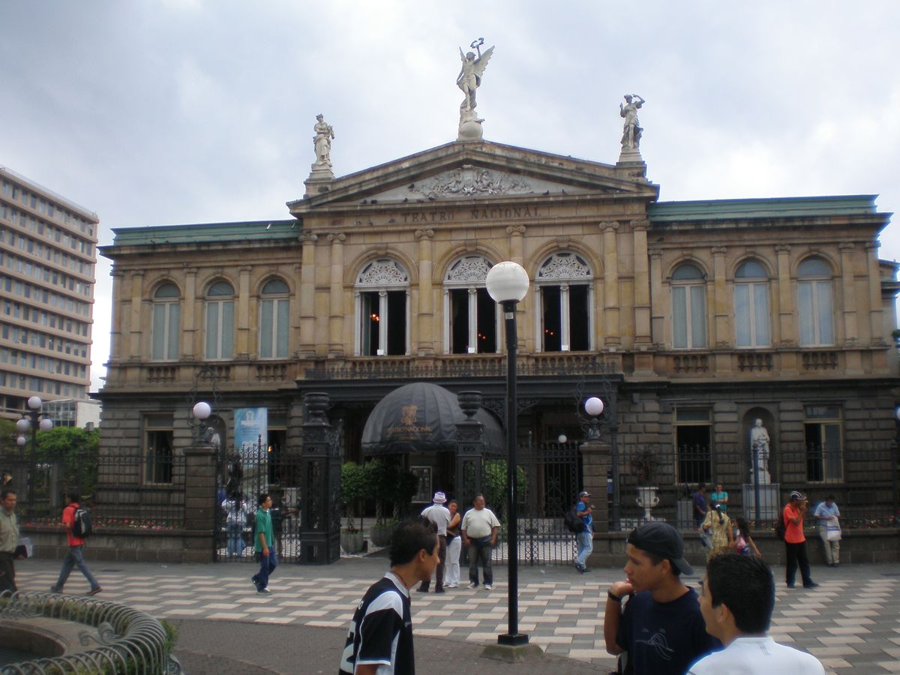

Inicio / San José

Llegada y salida
San José
La puerta de entrada y salida del viaje: una tarde para pasear por el centro antes de salir hacia la selva, y una última noche de piscina y descanso antes del vuelo de vuelta.
18 - 20 agosto · Holiday Inn Express San José29 - 30 agosto · Holiday Inn Express San José